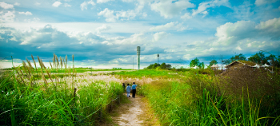

WE ARE PLAY PHOTO
Our Best Works
Our conversations on faith & community, along with stories of people living on mission.
tay updated by subscribing to the blog rss feed.

Pray for Oklahoma
We are busy doing church programs, attending five services a week, but we never share the Gospel. Do less church stuff & more "worldly stuff".

Pray for Oklahoma
It is heartbreaking to see the devastation. We have a truck that needs to be packed with much-needed supplies that leaves on Saturday. We need your help.

Pray for Oklahoma
Spiritual infants may go to church & small groups, listen to podcasts & tweet favorite verses. And then continue to live lives as they had been before.